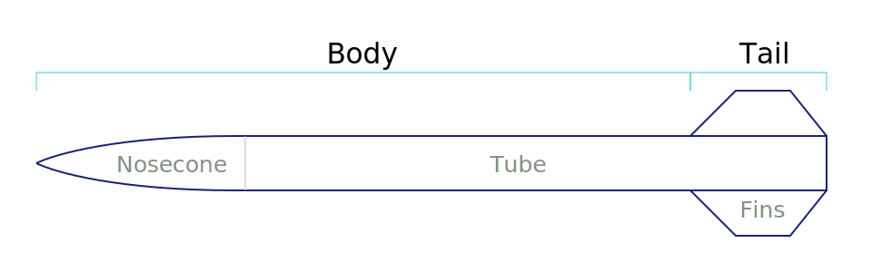

barrowman package
Units: Internally uses SI (MKS). Assume length in Meters, etc.) Angles are radians. Parameters should be explicit for the units they accept.
Main Module contents
-
class
barrowman.Component Bases:
objectBase class for a single rocket Component. This can be something like a nosecone or the body of a rocket. It is a physical thing that has a length and width, and therefore volume and area.
-
area The area of the component
-
length The length of the component
-
volume The volume of the component
-
-
class
barrowman.Fin(root, tip, span, sweep=None, sweepangle=45.0) Bases:
barrowman.ComponentA single trapezoidal fin.
Note: though both sweep and sweepangle are optional, you probably need to specify at least one to correctly define a fin. Specifying both makes the system overdetermined.
Nomenclature diagram:
Parameters: - root (float) – Length of the root chord of the fin [meters]
- tip (float) – Length of the tip chord of the fin [meters]
- span (float) – Length of the span of the fin [meters]
- sweep (float) – (Optional, default=None) The length of the sweep portion [meters]
- sweepangle (float) – (Optional, default=45.0) The angle of the sweep [degrees]
-
area The area of the component
-
length The length of the component
-
root= None Root Chord of fin
-
span= None Span (“height”) of fin
-
sweep= None Sweep length of the fin
-
sweepangle= None Angle of sweep of the fin [radians]
-
tip= None Tip Chord of fin
-
volume The volume of the component
-
class
barrowman.Nose(shape, width, length) Bases:
barrowman.ComponentA Nosecone. Must be of a known shape (Conical, ogive, etc). The tip of the nose is assumed to be a sharp point and the datum (x=0) for all measurements.
Parameters: - shape (str) – The type of nosecone, see class for list of valid shapes
- width (float) – The diameter of the nose [meters]
- length (float) – The length of the nose [meters]
-
CONE= 'cone' Shape type ‘cone’
-
area The area of the component
-
length The length of the component
-
volume The volume of the component
-
class
barrowman.Tube(width, length) Bases:
barrowman.ComponentA cylindrical section of rocket.
Parameters: - width (float) – The diameter of the section [meters]
- length (float) – The length of the section [meters]
-
area The area of the component
-
length The length of the component
-
volume The volume of the component
Submodules
barrowman.original module
The Barrowman Method
A python implementation of the original Barrowman Method for the approximate evaluation of the aerodynamic model of a rocket.
From the paper:
STATEMENT OF PROBLEM
Determine a set of expressions for the practical calculation of the aerodynamic characteristics of slender, axisymmetric finned vehicles at both subsonic and supersonic speeds. The characteristics of interest are the normal force coefficient derivative, C_Na; center of pressure, Xbar; roll forcing moment coefficient derivative, C_ls; roll damping moment coefficient derivative, C_lp; pitch damping moment coefficient derivative, C_mq; and drag coefficient, C_D.
GENERAL METHOD OF SOLUTION
- Divide vehicle into body and tail.
- Analyze the body and tail separately. Subdivide either when necessary
- Analyze wing-body interference.
- Recombine to form total vehicle solution.
GENERAL ASSUMPTIONS
- The angle-of-attack is very near zero.
- The flow is steady and irrotational.
- The vehicle is a rigid body.
- The nose tip is a sharp point.
-
class
barrowman.original.Body(body) Bases:
objectAerodynamic model of the body section (excluding fins) of a rocket. This includes the nose cone.
Nomenclature diagram:
Parameters: body (list) – A list of body components (Nose, tube, transition, etc.) Members:
-
C_Na(Mach) Normal Force Coefficient Derivative.
Parameters: Mach (float) – Mach number of the air-stream over the rocket [dimensionless] Returns: the aerodynamic normal coefficient (C_Na) for the body
-
C_P(Mach) Center of Pressure.
Parameters: Mach (float) – Mach number of the air-stream over the rocket [dimensionless] Returns: the center of pressure of the rocket body in [meters] (tip of nose = 0)
-
-
class
barrowman.original.Rocket(body, tail) Bases:
objectFull solution for a rocket
-
C_P(Mach) Center of Pressure.
Parameters: Mach (float) – Mach number of the air-stream over the rocket [dimensionless] Returns: the center of pressure of the rocket body in [meters] (tip of nose = 0)
-
-
class
barrowman.original.Tail(fin, N) Bases:
objectThe tail section of the rocket: i.e. the part with fins. Assume that each fin is exactly the same and evenly spaced, and the bottom of the root chord is also the bottom of the rocket.
Nomenclature diagram:
Takes a fin definition and the number of fins.
Parameters: - fin (Fin) – A Fin object
- N (int) – The number of fins on the tail
-
C_P(Mach) Center of Pressure.
Parameters: Mach (float) – Mach number of the air-stream over the rocket [dimensionless] Returns: the center of pressure of the rocket body in [meters] (tip of nose = 0)